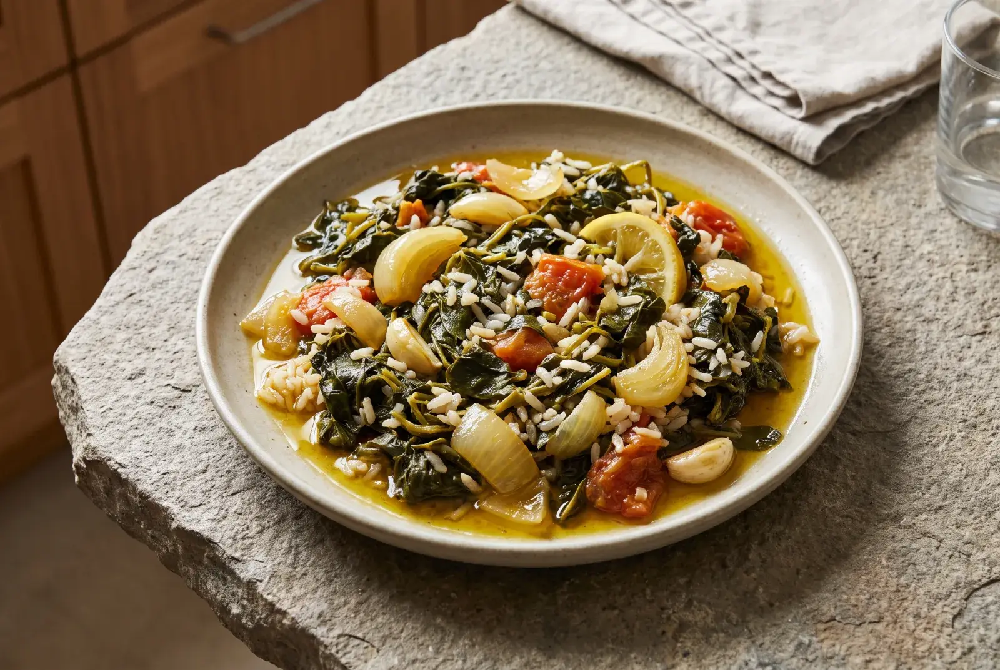
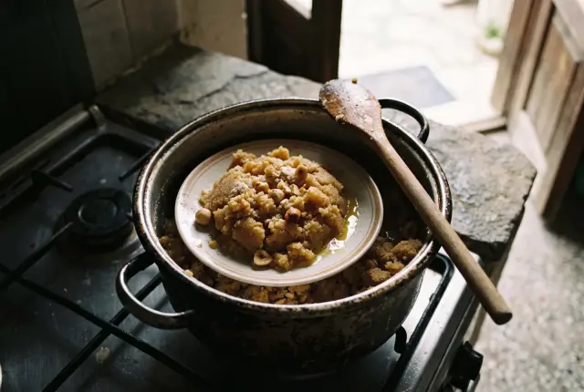

Meze
Yeşil Mercimek Salatası | Naneli Zeytinyağlı Meze
35 dk Çok Kolay 4 kişilik ₺ ₺ ₺
Atakan Gümüşpala
5.0 74

Hayvansal süt ürünleri içermeyen tarifler; tereyağı yerine zeytinyağı, süt yerine bitkisel süt. Hem laktoz intoleransı hem İSPA düşünülerek hazırlanır.
Bu bilgiler genel bilgilendirme amaçlıdır; tanı ve tedavi için hekiminize danışın.
Dada Gastro tariflerinden bu modun kuralına uyanlar. Karttaki rozetler mod uyumunu ve uygulanan akıllı ikameyi gösterir.
Filtreleri gevşetin ya da alerjen seçiminizi gözden geçirin.
Filtreleri temizleListeler her tarifin malzemelerine tek tek bakılarak kurulur; emin olunamayan tarif gösterilmez.
Bu malzemeleri içeren tarifler, tanımlı bir ikame yoksa listede yer almaz.
Tarif kartında hangi ikamenin uygulandığı yazar; tarif detayında malzeme listesi ikameyle birlikte gösterilir.
Yerine: Tereyağı
Kullanılacak: Zeytinyağı ya da hindistan cevizi yağı
Yerine: İnek sütü
Kullanılacak: Bitkisel süt (yulaf, pirinç, badem)
Yerine: Yoğurt
Kullanılacak: Hindistan cevizi ya da soya yoğurdu
Yerine: Krema
Kullanılacak: Hindistan cevizi kreması
Yerine: Peynir (üstüne)
Kullanılacak: Besin mayası ya da kavrulmuş kaju kreması
Yerine: Ayran
Kullanılacak: Limonlu soda ya da bitkisel kefir
Mutfakta işe yarayan kısa notlar.
Biri süt şekerinin sindirimiyle, diğeri süt proteinine verilen bağışıklık tepkisiyle ilgilidir. Mutfakta neden farklı dikkat isterler?
Oku
2 dk okumaKavurma, hamur, sos ve tatlıda tereyağı ile sütün yerini neyin alabileceğine dair pratik notlar.
OkuYulaf, pirinç, badem, soya ve hindistan cevizi sütünün tadı ve kıvamı farklıdır. Hangi tarifte hangisinin iyi çalıştığına bakalım.
OkuYalnız yönetici görür. Bu alan prototipte görünür; canlıda yönetici yetkisine bağlanacaktır.
Bizimle iş birliği yapan dernek, vakıf ve meslek kuruluşları.
Çocuk alerji ve immünoloji alanında çalışan hekimlerin derneği; inek sütü alerjisi bu alanın konularındandır.
Resmî site (yeni sekmede açılır)
Süt alerjisi dahil besin alerjisi olan çocukların ailelerine yönelik bir hasta/aile derneği.
Resmî site (yeni sekmede açılır)
Sindirim sistemi hastalıkları alanındaki uzmanların meslek derneği.
Resmî site (yeni sekmede açılır)Tarifin her malzemesi sütsüz modun kurallarına göre kontrol edilir; hayvansal süt ürünleri ve süt proteini taşıyabilecek paketli ürünler dışarıda kalır. Emin olunamayan tarif listelenmez. Bazı tariflerde tereyağı, süt ya da krema akıllı ikameyle değiştirilmiştir ve kartta yazar. Paketli ürünlerde etiketi her zaman kontrol edin.
Laktozsuz süt, laktozu ayrıştırılmış inek sütüdür; süt proteini hâlâ içindedir. Bu mod İSPA'yı da kapsadığı için laktozsuz inek sütü yerine bitkisel süt önerilir. Yalnız laktoz intoleransı olanlar için laktozsuz süt bir seçenek olabilir; bunu hekimle konuşmak en doğrusudur.
Keçi ve koyun sütü de laktoz ve inek sütüne benzer proteinler içerir. Bu yüzden bu modda hayvansal sütlerin tamamı aynı şekilde değerlendirilir ve tarif dışında kalır.
Süt tozu, peynir altı suyu tozu, kazein, kazeinat ve laktoz, sütten gelen bileşenlerin etiketteki adlarıdır. Hazır hamur, bisküvi, çikolata, sucuk ve sosis gibi ürünlerde sık karşılaşılır. Alerjenler içindekiler listesinde çoğu zaman kalın ya da farklı yazıyla vurgulanır.
Koyu yeşil yapraklı sebzeler, susam ve tahin, kuru baklagiller, badem ve kılçığıyla yenen küçük balıklar kalsiyum içeren besinler arasındadır. Bazı bitkisel sütler kalsiyumla zenginleştirilir; bu bilgi etikette yer alır. Kişiye uygun beslenme düzeni için diyetisyenle konuşmak yol göstericidir.